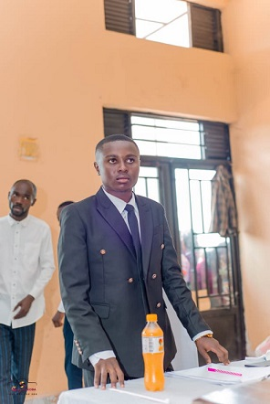

Je m'appelle Abel Koyakele Koto, étudiant en Master en informatique, développeur web, graphiste et monteur vidéo. Je suis passionné par les nouvelles technologies et la création de solutions numériques modernes. Grâce à mes études universitaires et à mes projets personnels, j'ai acquis des compétences en développement web, conception de bases de données, design graphique, montage vidéo et communication digitale. Mon objectif est d'intégrer une entreprise où je pourrai mettre en pratique mes connaissances tout en continuant à apprendre et à évoluer.